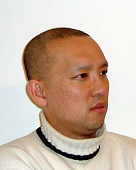

Kyeong Soo (Joseph) Kim
Table of Contents
Profile
 Kyeong Soo (Joseph) Kim received B.S., M.S., and Ph.D. degrees
in Electronics Engineering from Seoul National University, Seoul, Korea, in
1989, 1991, and 1995, respectively.
From 1996 to 1997, he was engaged in the development of multi-channel
asynchronous transfer mode (ATM) switching systems as a Post-Doc researcher at
Washington University in St. Louis, Missouri, where he also taught undergraduate
and graduate students as an Instructor of Washington University in St. Louis and
Adjunct professor of University Missouri - St. Louis. From 1997 to 2000, he
worked with the passive optical network (PON) Systems R&D organization of Lucent
Technologies and was involved with development of ATM-PON systems, which won the
1999 Bell Labs President's Silver Award. From Jan. 2001 to Jul. 2007, he was
with STMicroelectronics, working as a Principal Engineer, and represented
STMicroelectronics in various standard bodies, including FSAN, ITU-T, and IEEE
802.11/16 working groups; from Jan. 2001 to Aug. 2006, he also took the position
of STMicroelectronics Researcher-in-Residence at the Stanford Networking
Research Center (SNRC) and worked on "Optical Internet" and "Next-Generation
Access Networks" projects together with students and faculties at Stanford
University. From Aug. 2007 to Jun. 2014, he worked at the College of
Engineering, Swansea University, Wales, U.K., as Associate Professor in
Networking, where he led Hybrid Networking Research Laboratory (HNRL) and
carried out research in next-generation optical access (NGOA) and hybrid
optical-wireless networks.
Since Jul. 2014, he has been working at the Department of Electrical and
Electronic Engineering (EEE), Xi'an Jiaotong-Liverpool University (XJTLU),
Suzhou, China, as Associate Professor.
Dr. Kim is a member of IEEE and IET.
Contact
Kyeong Soo (Joseph) Kim, Ph.D.
Associate Professor
Department of Electrical and Electronic Engineering
Xi'an Jiaotong-Liverpool University
111 Ren'ai Road, Dushu Lake Higher Education Town, Suzhou Industrial Park
Suzhou 215123, Jiangsu Province, P. R. China
- Office: Public Building P510A
- Tel: +86 (0)512 8188 4811
- Fax: +86 (0)512 8188 0445
- Email: Kyeongsoo.Kim_at_xjtlu.edu.cn / kimks_at_ieee.org
- Homepage@XJTLU: http://academic.xjtlu.edu.cn/eee/Staff/kyeongsoo-kim
- Homepage@LinkedIn: https://www.linkedin.com/in/kyeongsoo
Updates
- Kyeong Soo Kim, "Atomic scheduling of appliance energy consumption in residential smart grid," presented at CeSGIC 2nd International Workshop on Smart Grid Technology and Data Processing, Xi'an Jiaotong-Liverpool University (XJTLU), Suzhou, China, Mar. 18, 2016.
- Kyeong Soo Kim, Sanghyuk Lee, and Eng Gee Lim, "Energy-efficient time synchronization based on asynchronous source clock frequency recovery and reverse two-way message exchanges in wireless sensor networks," submitted to IEEE Transactions on Communications, Feb. 15, 2016. (arXiv)
- Kyeong Soo Kim, "Comments on "On clock synchronization algorithms for wireless sensor networks under unknown delay"," submitted to IEEE Transactions on Vehicular Technology, Jan. 29, 2016. (arXiv)
- Tiew On Ting, Jieming Ma, Kyeong Soo Kim, and Kaizhu Huang, "Multicores and GPU Utilization in Parallel Swarm Algorithm for Parameter Estimation of Photovoltaic Model," accepted for publication at Applied Soft Computing, Oct. 24, 2015.
- Kyeong Soo Kim, Sanghyuk Lee, and Eng Gee Lim, "Simulation study of an energy-efficient time synchronization scheme based on source clock frequency recovery in asymmetric wireless sensor networks," to be presented at ISAE2015, Oct. 22, 2015.
- Kyeong Soo Kim, "On guaranteeing the quality of service of conformant traffic in excess bandwidth allocation for shared access networks," accepted for presentation at 36th IEEE Sarnoff Symposium - 2015, Aug. 7, 2015. (DOI)
- Su Fong Chien, Mau-Luen Tham, Tiew On Ting, and Kyeong Soo Kim, "Resource allocation in energy efficient OFDMA system via stable matching marriage algorithm with consideration to proportional rate constraints," accepted for presentation at WOCC 2015, Jun. 26, 2015.
- Kyeong Soo Kim, Sanghyuk Lee, and Eng Gee Lim, "On enery-efficient time synchronization based on source clock frequency recovery in wireless sensor networks," presented and awarded Best Paper Award at ICISCA 2015, Jun. 25, 2015. (arXiv)
- Kyeong Soo Kim, "Atomic scheduling of appliance energy consumption in residential smart grid," presented at CeSGIC 1st International Workshop on Smart Grid Technology and Data Processing, Xi'an Jiaotong-Liverpool University (XJTLU), Suzhou, China, Jun. 19, 2015. (slideshare)
- Kyeong Soo Kim, "Designing pricing schemes based on progressive tariff and consumer grouping in migration to a future smart grid," accepted for presentation at ICICTS 2015, Dec. 26, 2014. (arXiv)
- Awarded Xi'an Jiaotong-Liverpool University Research Development Fund (14/15 Round 1; 95,000 RMB) for "Network Traffic Control Schemes and Service Plans exploiting Excess Bandwidth in Shared Access Networks", Nov. 14, 2014.
- Kyeong Soo Kim, "Toward fully-shared access: Designing ISP service plans leveraging excess bandwidth allocation," accepted for presentation at ICTC 2014, Sep. 1, 2014. (arXiv)
- Kyeong Soo Kim, "The effect of ISP traffic shaping on user-perceived performances in broadband shared access networks," accepted for publication in the Computer Networks, Jun. 1, 2014. (DOI) (arXiv)
- Kyeong Soo Kim, "Comments on 'IEEE 1588 clock synchronization using dual slave clocks in a slave'," accepted for publication in the IEEE Communications Letters, Apr. 7, 2014. (DOI) (arXiv)
- Kyeong Soo Kim, "On the excess bandwidth allocation in ISP traffic control for shared access networks," accepted for publication in the IEEE Communications Letters, Jan. 25, 2014. (DOI) (arXiv)
- Kenneth S. Nwizege, Jianhua He, Kyeong Soo Kim, and Petar Igic, "Performance evaluation of adaptive context aware rate selection algorithm (ACARS) for road safety applications in vehicular network," to be presented at 2013 European Modelling Symposium (EMS), Oct. 17, 2013. (DOI)
- Liwen Chu, Kyeongsoo Kim, and George Vlantis, "Six-address scheme for multiple hop forwarding in wireless mesh networks," awarded US Patent, No. 8,483,192, Jul. 9, 2013. (USPTO)
- Luke Farmer and Kyeong Soo Kim, "Cooperative ISP traffic shaping schemes in broadband shared access networks," accepted for presentation at FOAN 2013, Jul. 19, 2013. (DOI) (arXiv)
- Kyeong Soo Kim, "Asynchronous source clock frequency recovery through aperiodic packet streams," accepted for publication in the IEEE Communications Letters, May 13, 2013. (DOI) (arXiv)
Research
Projects
Network Traffic Control Schemes and Service Plans exploiting Excess Bandwidth in Shared Access Networks
- Xi'an Jiaotong-Liverpool University Research Development Fund (RDF) under grant reference number RDF-14-01-25.
- Duration: 01/2015-12/2017 (3 years)
- Funding: RMB 95,000
- Participants
- PI: Dr Kyeong Soo Kim (Department of Electrical and Electronic Engineering, XJTLU)
- Co-PI: Dr Sanghyuk Lee (Department of Electrical and Electronic Engineering, XJTLU)
- Co-PI: Mr Peter Thompson (Predictable Network Solutions Ltd., UK)
Software
- INET-HNRL: A new fork of INET framework which provides simulation models and new analysis frameworks in both optical and wireless networking and their hybrid.
- INET-20061020-sommer\_dymo06-jkim.diff: A patch for Christoph Sommer's DYMO model, including a simulation example, to run on Windows platforms.
Publications (@Google Scholar)
Journals and Magazines
- Tiew On Ting, Jieming Ma, Kyeong Soo Kim, and Kaizhu Huang, "Multicores and GPU Utilization in Parallel Swarm Algorithm for Parameter Estimation of Photovoltaic Model," Applied Soft Computing, vol. 40, pp. 58-63, Mar. 2016. [SCIE] (DOI)
- Kyeong Soo Kim, "The effect of ISP traffic shaping on user-perceived performances in broadband shared access networks," Computer Networks, vol. 70, pp. 192-209, Sep. 2014. [SCIE] (DOI) (arXiv)
- Kyeong Soo Kim, "Comments on "IEEE 1588 clock synchronization using dual slave clocks in a slave"," IEEE Communications Letters, vol. 18, no. 6, pp. 981-982, Jun. 2014. [SCI] (DOI) (arXiv)
- Kyeong Soo Kim, "On the excess bandwidth allocation in ISP traffic control for shared access networks," IEEE Communications Letters, vol. 18, no. 4, pp. 692-695, Apr. 2014. [SCI] (DOI) (arXiv)
- Kyeong Soo Kim, "Asynchronous source clock frequency recovery through aperiodic packet streams," IEEE Communications Letters, vol. 17, no. 7, pp. 1455-1458, Jul. 2013. [SCI] (DOI) (arXiv)
- Kyeong Soo Kim, "A research framework for the clean-slate design of next-generation optical access," (Extended version of the FOAN 2011 paper) Fiber and Integrated Optics — Special Issue on Second Fiber Optics in Access Networks (FOAN), vol. 31, issue 2, pp. 90-110, Apr. 2012. [SCIE] (DOI) (arXiv)
- Farsheed Farjady, Kyeong Soo (Joseph) Kim, Nayla El Dahdah, and Nick J. Doran, "Cost-effective upgrade of WDM all-optical networks using overlay fibers and hop reduction links," European Transactions on Telecommunications, vol. 21, issue 6, pp. 563-566, Oct. 2010. [SCIE] (DOI)
- Kyeong Soo Kim, David Gutierrez, Fu-Tai An, and Leonid G. Kazovsky, "Design and performance analysis of scheduling algorithms for WDM-PON under SUCCESS-HPON architecture," IEEE/OSA Journal of Lightwave Technology, vol. 23, no. 11, pp. 3716-3731, Nov. 2005. [SCI] (DOI)
- Fu-Tai An, David Gutierrez, Kyeong Soo Kim, Jung Woo Lee, and Leonid G. Kazovsky, "SUCCESS-HPON: A next-generation optical access architecture for smooth migration from TDM-PON to WDM-PON," IEEE Communications Magazine — Optical Communications Supplement Special Issue on Optical Networking Testbeds (Part 2), vol. 43, no. 11, pp. S40-S47, Nov. 2005. [SCI] (DOI)
- Fu-Tai An, Kyeong Soo Kim, David Gutierrez, Scott Yam, Eric Hu, Kapil Shrikhande, and Leonid G. Kazovsky, "SUCCESS: A next-generation hybrid WDM/TDM optical access network architecture," IEEE/OSA Journal of Lightwave Technology, vol. 22, no. 11, pp. 2557-2569, Nov. 2004. [SCI] (DOI)
- Kyeong Soo Kim, "On the evolution of PON-based FTTH solutions," (Invited Paper) Information Sciences, vol. 149/1-2, pp. 21-30, Jan. 2003. [SCI] (DOI)
- Kyeong Soo Kim and Leonid G. Kazovsky, "Design and performance evaluation of scheduling algorithms for unslotted CSMA/CA with backoff MAC protocol in multiple-access WDM ring networks," (Invited Paper) Information Sciences, vol. 149/1-2, pp. 135-148, Jan. 2003. [SCI] (DOI)
- Kyeong Soo Kim and Byeong Gi Lee, "KALP: A Kalman filter-based adaptive clock method with lowpass prefiltering for packet networks use," IEEE Trans. Commun., vol. 48, no. 7, pp. 1217-1225, Jul. 2000. [SCI] (DOI)
- Kyeong Soo Kim and Byeong Gi Lee, "Three-level traffic shaper and its application to source clock frequency recovery for VBR video services in ATM networks," IEEE/ACM Trans. Networking, vol. 3, no. 4, pp. 450-458, Aug. 1995. [SCI] (DOI)
- Kyeong Soo Kim and Byeong Gi Lee, "GA-based optimal dimensioning of three-level traffic shaper for statistical multiplexing in ATM networks," Annals of Telecommunications, vol. 50, no. 7-8, pp. 624-631, Jul./Aug. 1995. [SCI] (Springer)
- Kyeong Soo Kim and Byeong Gi Lee, "Analysis of output-controlled queueing systems in ATM Networks," The Journal of Korea Information and Communications Society (in Korean), vol. 20, no. 8, pp. 2246-2257, Aug. 1995. (DBpia)
- Kyeong Soo Kim and Byeong Gi Lee, "Source clock frequency recovery for VBR video services using three-level traffic shaper," The Journal of Korea Information and Communications Society (in Korean), vol. 20, no. 8, pp.2173-2182, Aug. 1995. (DBpia)
Conferences and Workshops
- Kyeong Soo Kim, Sanghyuk Lee, and Eng Gee Lim, "Simulation study of an energy-efficient time synchronization scheme based on source clock frequency recovery in asymmetric wireless sensor networks," Proc. of ISAE 2015, Pukyong National University, Busan, Korea, pp. 69-72, Oct., 2015. (arXiv)
- Kyeong Soo Kim, "On guaranteeing the quality of service of conformant traffic in excess bandwidth allocation for shared access networks," Proc. of 36th IEEE Sarnoff Symposium, Newark, NJ, USA, pp. 111-116, Sep 20-22, 2015. (DOI)
- Kyeong Soo Kim, Sanghyuk Lee, and Eng Gee Lim, "On energy-efficient time synchronization based on source clock frequency recovery in wireless sensor networks," (Best Paper Award) Proc. of ICISCA 2015, Kuala Lumpur, Malaysia, pp. 107-108, Jun., 2015. (arXiv)
- Kyeong Soo Kim, "Designing pricing schemes based on progressive tariff and consumer grouping in migration to a future smart grid," Proc. of ICICTS 2015, Bangkok, Thailand, Jan. 2015. (arXiv)
- Kyeong Soo Kim, "Toward fully-shared access: Designing ISP service plans leveraging excess bandwidth allocation," Proc. of 2014 International Conference on ICT Convergence (ICTC 2014), Busan, Korea, pp. 897-900, Oct. 22-24, 2014. (DOI) (arXiv)
- Kenneth S. Nwizege, Jianhua He, Kyeong Soo Kim, and Petar Igic, "Performance evaluation of adaptive context aware rate selection algorithm (ACARS) for road safety applications in vehicular network," Proc. of the 7th European Modelling Symposium (EMS 2013), Manchester, UK, pp. 640-646, Nov. 2013. (DOI)
- Luke Farmer and Kyeong Soo Kim, "Cooperative ISP traffic shaping schemes in broadband shared access networks," Proc. of the 4th International Workshop on Fiber Optics in Access Networks (FOAN 2013), Almaty, Kazakhstan, Sep. 2013. (DOI) (arXiv)
- Mithileysh Sathiyanarayanan and Kyeong Soo Kim, "Multi-channel deficit round-robin scheduling for hybrid TDM/WDM optical networks," Proc. of the 4th International Congress on Ultra Modern Telecommunications and Control Systems (ICUMT 2012), St. Petersburg, Russia, pp. 552-557, Oct. 2012. (DOI) (arXiv)
- Kyeong Soo Kim, "The effect of ISP traffic shaping on user-perceived performances in broadband access networks," Proc. of the 4th International Congress on Ultra Modern Telecommunications and Control Systems (ICUMT 2012), St. Petersburg, Russia, pp. 533-538, Oct. 2012. (DOI)
- Kyeong Soo Kim, "A research framework for the clean-slate design of next-generation optical access," (Best Paper Award at FOAN 2011) Proc. of the 3rd International Congress on Ultra Modern Telecommunications and Control Systems (ICUMT 2011), Budapest, Hungary, Oct. 2011. (IEEE)
- Kyeong Soo Kim, Karin Ennser, and Yogesh K. Dwivedi, "Clean-slate design of next-generation optical access," (Invited paper) Proc. of the 13th International Conference on Transparent Optical Networks (ICTON), Stockholm, Sweden, Jun. 2011. (DOI) (arXiv)
- Kyeong Soo Kim, "Integration of OMNeT++ hybrid TDM/WDM-PON models into INET Framework," OMNeT++ Workshop 2011, Barcelona, Spain, Mar. 21, 2011. (OMNeT++ Workshop 2011)
- Kyeong Soo (Joseph) Kim, "An equivalent circuit rate-based study of next-generation optical access architectures," Proc. of the 3rd International ICST Conference on Simulation Tools and Techniques (SIMUTools '10), Torremolinos, Malaga, Spain, Mar. 19, 2010. (DOI)
- Ghislain Maurice N. Isabwe and Kyeong Soo (Joseph) Kim, "A novel approach to WLAN mesh interworking with multiple mesh portals," Proc. of the 5th IEEE International Conference on Mobile Ad Hoc and Sensor Systems (MASS 2008), Atlanta, GA, USA, pp. 641-646, Sep. 2008. (DOI)
- Weixuan Huang, Jinho Choi, and Kyeong Soo Kim, "On the impact of channel outage on the throughput of fast retrial random access for OFDMA uplink," Proc. of IEEE 67th Vehicular Technology Conference (VTC2008-Spring), Marina Bay, Singapore, May 2008. (DOI)
- Kyeong Soo Kim, "Research issues in next-generation optical access networks: Lessons from the SUCCESS Initiative," COST291 Workshop: The Role of Optical Networking in the Future Internet, Vilanova i la Geltrú, Catalonia, Spain, Mar. 11, 2008. (CiteSeerX)
- Jung Woo Lee, David Gutierrez, Kyeong Soo Kim, and Leonid G. Kazovsky, "Achieving 100% throughput in WDM-PON under the SUCCESS-HPON architecture," Proc. of GLOBECOM 2006, San Francisco, CA, USA, Nov. 2006. (DOI)
- Wei-Tao Shaw, David Gutierrez, Kyeong Soo Kim, Ning Cheng, Shing-Wa Wong, She-Hwa Yen, and Leonid G. Kazovsky, "GROW-Net - A new hybrid optical wireless access network architecture," (Invited Paper) Proc. of JCIS 2006, Kaohsiung, Taiwan, Oct. 2006. (DOI)
- David Gutierrez, Wei-Tai Shaw, Fu-Tai An, Kyeong Soo Kim, Yu-Li Hsueh, Matthew S. Rogge, ShingWa Wong and Leonid G. Kazovsky, "Next generation optical access networks," (Invited Paper) Proc. of BROADNETS 2006, San Jose, CA, USA, Oct. 2006. (DOI)
- David Gutierrez, Kyeong Soo Kim, Fu-Tai An, and Leonid G. Kazovsky, "SUCCESS-HPON: Migrating from TDM-PON to WDM-PON," Proc. of ECOC 2006, Cannes, France, Sep. 2006. (DOI)
- David Gutierrez, Kyeong Soo Kim, Salvatore Rotolo, Fu-Tai An, and Leonid G. Kazovsky, "FTTH standards, deployments and research issues," (Invited paper) Proc. of JCIS 2005, Salt Lake City, UT, USA, pp. 1358-1361, Jul. 2005. (CiteSeerX)
- Kyeong Soo Kim, David Gutierrez, Fu-Tai An, and Leonid G. Kazovsky, "Batch scheduling algorithm for SUCCESS WDM-PON," Proc. of GLOBECOM 2004, Dallas, TX, USA, vol. 3, pp. 1835-1839, Nov. 2004. (DOI)
- Kyeong Soo Kim, Fu-Tai An, David Gutierrez, and Leonid G. Kazovsky, "On the next-generation optical access architecture," Proc. of IASTED International Multi-Conference on Wireless and Optical Communications (WOC 2004), Banff, Canada, Jul.2004. (ACTA Press)
- Fu-Tai An, Kyeong Soo Kim, Yu-Li Hsueh, Matthew S. Rogge, Wei-Tao Shaw, and Leonid G. Kazovsky, "Evolution, challenges and enabling technologies for future WDM-based optical access networks," (Invited paper) Proc. of JCIS 2003, Research Triangle Park, NC, USA, pp. 1449-1453, Sep. 2003. (CiteSeerX)
- Yu-Li Hsueh, Fu-Tai An, Kyeong Soo Kim, and Leonid G. Kazovsky, "A new media access control protocol with quality of service and fairness guarantee in Ethernet-based passive optical networks," Proc. of JCIS 2003, Research Triangle Park, NC, USA, pp. 1392-1395, Sep. 2003. (CiteSeerX)
- Fu-Tai An, Yu-Li Hsueh, Kyeong Soo Kim, Ian M. White, and Leonid G. Kazovsky, "A new dynamic bandwidth allocation protocol with quality of service in Ethernet-based passive optical networks," Proc. of IASTED International Conference on Wireless and Optical Communications (WOC 2003), Banff, Canada, Jul. 2003. (arXiv)
- Fu-Tai An, Hopil Bae, Yu-Li Hsueh, Kyeong Soo Kim, Matthew S. Rogge, and Leonid G. Kazovsky, "A new media access control protocol guaranteeing fairness among users in Ethernet-based passive optical networks," Technical Digest of OFC 2003, Atlanta, GA, USA, MF107, pp. 134-135, Mar. 2003. (DOI)
- Kyeong Soo Kim, Hiroshi Okagawa, Kapil Shrikhande, and Leonid G. Kazovsky, "Unslotted optical CSMA/CA MAC protocol with fairness control in metro WDM ring networks," Proc. of GLOBECOM 2002, Taipei, Taiwan, Nov. 2002. (DOI)
- Kapil Shrikhande, Yoshiaki Ikoma, Akira Nakamura, Kyeong Soo Kim, Kazuyoshi Horie, and Leonid G. Kazovsky, "Hitless wavelength add-drop using a novel signaling protocol combined with hitless switching techniques," Technical Digest of OFC 2002, Anaheim, CA, USA, ThGG91, pp. 740-742, Mar. 2002. (DOI)
- Kyeong Soo Kim, "On the evolution of PON-based FTTH solutions," (Invited paper) Proc. of JCIS 2002, Research Triangle Park, NC, USA, pp. 1402-1405, Mar. 2002. (arXiv)
- Kyeong Soo Kim and Leonid G. Kazovsky, "Design and performance evaluation of scheduling algorithms for unslotted CSMA/CA with backoff MAC protocol in multiple-access WDM ring networks," Proc. of JCIS 2002, Research Triangle Park, NC, USA, pp. 1303-1306, Mar. 2002. (CiteSeerX)
- Kyeong Soo Kim, Kang Seok Seo, and Byeong Gi Lee, "On jitter characteristics in multi-node packet network environment: The white Gaussian noise assumption is valid?," Proc. of ICT'99, Cheju, Korea, Jun. 1999. (ResearchGate)
- Peter Y. Yan, Kyeong Soo Kim, Paul S. Min, and Manju V. Hegde, "Multi-channel deflection crossbar (MCDC): A VLSI optimized architecture for multi-channel ATM switching," Proc. of INFOCOM'97, Kobe, Japan, Apr. 1997. (DOI)
- Kyeong Soo Kim and Byeong Gi Lee, "On GA-based optimal dimensioning of three-level traffic shaper for statistical multiplexing in ATM networks," Proc. of ICCC'95, Seoul, Korea, pp. 479-484, Aug. 1995. (ACM)
- Kyeong Soo Kim and Byeong Gi Lee, "Three-level traffic shaper and its application to source clock frequency recovery for VBR video services in ATM networks," Proc. of ICCCN'93, San Diego, USA, pp. 251-256, Jun. 1993.
- Kyeong Soo Kim and Byeong Gi Lee, "A new BISDN GFC protocol supporting star, bus, and starred-bus network topology," Proc. of ICEIC'91, China, pp. (II-51)-(II-54), Aug. 1991. (DBpia)
- Kyeong Soo Kim and Byeong Gi Lee, "A new BISDN GFC protocol supporting star, bus, and starred-bus network topology," Proc. of JCCI'91 (in Korean), Korea, pp. 79-82, Aug. 1991. (DBpia)
Technical Reports
- Kyeong Soo Kim, "Integration of OMNeT++ hybrid TDM/WDM-PON models into INET Framework," Tech. Report, School of Engineering, Swansea University, Nov. 2010. (HNRL)
- Kyeong Soo (Joseph) Kim, "An equivalent circuit rate-based study of 10-Gb/s next-generation optical access architectures," Tech. Report, School of Engineering, Swansea University, Sep. 2010. (HNRL)
- Minseok Oh, Kyeong Soo Kim, and Paul S. Min, "Fault identification and detection schemes in multi-channel deflection crossbar (MCDC) ATM switch," Tech. Report, WUEE-96-209, Dept. of Elec. Eng., Washington University, Sep. 1996.
- Peter. Y. Yan, Kyeong Soo Kim, Paul S. Min, and Manju. V. Hegde, "Multicasting multi-channel crossbar (MMCC): A shared buffered multicast multi-channel ATM switch," Tech. Report, WUEE-96-208, Dept. of Elec. Eng., Washington University, Sep. 1996. (HNRL)
Patents
Issued
- "Six-address scheme for multiple hop forwarding in wireless mesh networks," US Patent No. 8,483,192, Jul. 9, 2013 (with Liwen Chu and George Vlantis). (USPTO)
- "Multi-table based grant generator for improved granularity in an ATM-PON," US Patent No. 6,980,519, Dec. 27, 2005 (with D. N. Horn and J. H.J. Maessen). (USPTO)
- "Fast protection switching by snooping on upstream signals in an optical network," US Patent No. 6,868,232, Mar. 15, 2005 (with P.v. Eijk et al.). (USPTO)
- "Health check algorithm for protection circuit in optical network," US Patent No. 6,778,781, Aug. 17, 2004 (with P.v. Eijk et al.). (USPTO)
- "Fast protection switching by snooping on downstream signals in an optical network," US Patent No. 6,771,908, Aug. 3, 2004 (with P.v. Eijk et al.). (USPTO)
- "Partial back pressure (PBP) transmission technique for ATM-PON using rate controllers to reduce a maximum output rate from a peak rate to a controlled rate," US Patent No. 6,721,797, Apr. 13, 2004. (USPTO)
Pending/Under Filing
- "A novel approach to WLAN mesh interworking with multiple mesh portals," Under filing, June 23, 2008 (with Ghislain Maurice N. Isabwe).
- "Block transmission scheme for IEEE 802.15.4 medium access," Under filing, Jan. 28, 2008 (with Jianhua He and Zuoyin Tang).
- "Path loop avoidance in RA-OLSR (radio aware-optimized link state routing protocol)," Under filing, May 2007 (with Liwen Chu and George Vlantis).
- "Coordinate channel selection in collated 802.11 networks," Under filing, Dec. 2006 (with Liwen Chu).
- "Method to decrease MP registration overhead in HWMP TBR (tree-based routing)," Under filing, Dec. 2006 (with Liwen Chu and George Vlantis).
- "Hybrid proactive on-demand routing in wireless networks," Filed in the USPTO, Feb. 21, 2008.
Standard Contributions
IEEE 802.11 Working Group on Wireless Local Area Networks
- Liwen Chu et al., "RA-OLSR comment resolution," IEEE 802.11-07/2125r2, Jul. 2007.
- Liwen Chu et al., "Updated texts for RA-OLSR," IEEE 802.11-07/2124r5, Jul. 2007.
- Mathilde Benveniste, Susan Hares, and Kyeong Soo Kim, "'Express' forwarding in a multi-hop wireless network," IEEE 802.11-07/0415r3, May 2007.
- Mathilde Benveniste, Susan Hares, and Kyeong Soo Kim, "Draft text changes for 'express forwarding' in a mesh," IEEE 802.11-07/0639r2, May 2007.
- Youiti Kado et al., "RA-OLSR comment resolution," IEEE 802.11-07/0626r2, May 2007.
- Youiti Kado et al., "Updated Texts for Clause 11A.7 RA-OLSR," IEEE 802.11-07/0627r1, May 2007.
- Kyeong Soo Kim et al., "Updated texts for frame addressing and forwarding in a mesh network," IEEE 802.11-07/0302r2, Mar. 2007.
- Meiyuan Zhao et al., "Terminology resolution," IEEE 802.11-07/0416r3, Mar. 2007.
- Hrishikesh Gossain et al., "Proxy frame forwarding," IEEE 802.11-07/0337r1, Mar. 2007.
- Youiti Kado et al., "Handling of associated legacy stations," IEEE 802.11-07/0318r3, Mar. 2007.
- Kyeong Soo Kim, Jefferson Owen, and George Vlantis, "Issues in mesh header field processing in payload encryption/decryption," IEEE 802.11-07/0354r1, Mar. 2007
- Youiti Kado et al., "Scalable station association information handling (summary)," IEEE 802.11-07/0176r0, Jan. 2007.
- Kazuyuki Sakoda, Kyeong Soo Kim, and W. Steven Conner, "The definition of broadcast in mesh," IEEE 802.11-06/1732r1, Nov. 2006
- Youiti Kado et al., "Scalable station association information handling," IEEE 802.11-06/1842r1, Nov. 2006.
- Jan Kruys et al., "Updated interworking text," IEEE 802.11-06/1787r3, Nov. 2006.
- Avinash Joshi et al., "HWMP specification," IEEE 802.11-06/1778r1, Nov. 2006.
- Guenael Strutt, Jan Kruys, and Kyeong Soo Kim, "RFI update Munich meeting," IEEE 802.11-06/1629r0, Nov. 2006.
- Guenael Strutt, Jan Kruys, Kyeong Soo Kim, and Avinash Joshi, "RFI update," IEEE 802.11-06/1487r0, Sep. 2006.
- Kyeong Soo Kim et al., "Action frame format and information elements specifications for RA-OLSR," IEEE 802.11-06/1395r2, Sep. 2006.
- Kyeong Soo Kim et al., "Updated RA-OLSR texts for clause 11A.5," IEEE 802.11-06/1481r0, Sep. 2006.
- Kyeong Soo Kim, Michael Bahr, Jan Kruys, and W. Steven Conner, "Proposed texts for TGs comment resolution," IEEE 802.11-06/1464r2, Sep. 2006.
- Liwen Chu, Kyeong Soo Kim, Jan Kruys, Shah Rahman, and George Vlantis, "Extension to 6-address scheme for TGs mesh," IEEE 802.11-06/0841r1, Jul. 2006.
- Wei-Peng Chen et al., "TBR centralized routing extension (slides)," IEEE 802.11-06/0631r2, May 2006.
- Wei-Peng Chen et al., "TBR centralized routing extension," IEEE 802.11-06/0630r1, May 2006.
- Osama Aboul-Magd et al., "Joint SEE-Mesh/Wi-Mesh proposal to 802.11 TGs," IEEE 802.11-06/0328r0, Feb. 2006.
- Santosh Abraham et al., "802.11 TGs simple efficient extensible mesh (SEE-Mesh) proposal," IEEE 802.11-05/0562r0, Jul. 2005.
- Liwen Chu et al., "ST+UCLA TGs mesh network proposal," IEEE 802.11-05/0379r0, May 2005.
IEEE 802.16 Working Group on Broadband Wireless Access
- Liwen Chu and Kyeong Soo Kim, "Action item from session #46: Text and figure fixing comment 544," IEEE C802.16h-06/129, Jan. 2007.
- Liwen Chu, George Vlantis, Wendong Hu, and Kyeong Soo Kim, "Enhancements to the optimization of channel distribution," IEEE C802.16h-06/101, Nov. 2006.
- Jerry Sydir et al., "Harmonized contribution on 802.16j (mobile multihop relay) usage models," IEEE C802.16j-06/015, Sep. 2006.
IEEE 802.22 Working Group on Wireless Regional Area Networks
- Wendong Hu, Liwen Chu, George Vlantis, and Kyeong Soo Kim, "Scheduling for connection based over-the-air inter base station communications," IEEE 802.22-06/0228r0, Nov. 2006.
- Wendong Hu, Liwen Chu, George Vlantis, and Kyeong Soo Kim, "Scheduling for connection based over-the-air inter base station communications," IEEE 802.22-06/0072r0, May 2006.
Full Service Access Network (FSAN) Group
- Kyeong Soo Kim, "Lucent technologies DBA contributions," FSAN OAN-WG meeting, Atlanta, USA, Dec. 2000.
- Kyeong Soo Kim, "Comments on the FSAN technical requirements for DBA (Version E, Sep. 4, 2000)," FSAN OAN-WG meeting, Paris, France, Oct. 2000.
- Kyeong Soo Kim, Han Boekhosrt, and R.C.J. Smets, "Lucent DBA-capable MAC algorithm and its initial OPNET simulation results," FSAN OAN-WG meeting, Paris, France, Oct. 2000.
- Kyeong Soo Kim, "Lucent's proposal for DBA," FSAN OAN-WG Meeting, Berlin, Germany, Sep. 2000.
- Kyeong Soo Kim, "General remarks on DBA and protection switching for ATM-PON and comments for the FSAN technical requirements," FSAN OAN-WG Meeting, Makuhari, Japan, Jun. 2000.
Talks (Classes/Seminars, Tutorials, and Forums)
- "Atomic scheduling of appliance energy consumption in residential smart grid," Seminar, Korea Advanced Institute of Science and Technology (KAIST), Daejeon, Korea, Feb. 16, 2016.
- "Atomic scheduling of appliance energy consumption in residential smart grid," CeSGIC 1st International Workshop on Smart Grid Technology and Data Processing, Xi'an Jiaotong-Liverpool University (XJTLU), Suzhou, China, Jun. 19, 2015. (slideshare)
- "A research framework for the clean-slate design of next-generation optical access," Seminar, Korea Advanced Institute of Science and Technology (KAIST), Daejeon, Korea, Aug. 22, 2011. (slideshare)
- "Data networks: Next-generation optical access toward 10 Gb/s everywhere," Academic Weeks Videoconference Session with Pakistan COMSATS Institute of Information Technology (CIIT), Swansea University, Swansea, Wales UK, Dec. 14, 2010. (slideshare)
- "Photonics21 – Next-generation optical Internet access: Roadmap for broadband optical Internet access towards 10 Gb/s everywhere," Seminar, Gwangju Institute of Science and Technology (GIST), Gwangju, Korea, Aug. 17, 2008. (slideshare)
- "Photonics21 – Next-generation optical Internet access: Roadmap for broadband optical Internet access towards 10 Gb/s everywhere," Seminar, Korea Advanced Institute of Science and Technology (KAIST), Daejeon, Korea, Aug. 10, 2008. (slideshare)
- "Photonics21 – Next-generation optical Internet access: Roadmap for broadband optical Internet access towards 10 Gb/s everywhere," Seminar, Inha University, Incheon, Korea, Jul. 30, 2008. (slideshare)
- "Photonics21 – Next-generation optical Internet access: Roadmap for broadband optical Internet access towards 10 Gb/s everywhere," Seminar, Seoul National University, Seoul, Korea, Jul. 29, 2008. (slideshare)
- "Photonics21 – Next-generation optical Internet access: Roadmap for broadband optical Internet access towards 10 Gb/s everywhere," Seminar, Ewha Womans University, Seoul, Korea, Jul. 28, 2008. (slideshare)
- "On next-generation metro and access networks," 2nd EU-Korea Cooperation Forum on ICT Research, Brussels, Belgium, Dec. 2008. (EuroSouthKorea-ICT.org) (slideshare)
- "IEEE 802.11s tutorial - Overview of the amendment for wireless local area mesh networking," IEEE 802 LMSC Plenary Session, Dallas, TX, USA, Nov. 13, 2006 (with W. Steven Conner, Intel Corp., Jan Kruys, Cisco Systems, and Juan Carlos Zuniga, InterDigital Comm. Corp.). (IEEE) (slideshare)
- "Next-generation optical access architecture," Seminar, Dept. of Electrical and Systems Eng., Washington University in St. Louis, St. Louis, MO, USA, Dec. 3, 2004. (slideshare)
- "AST optical access R&D programs," Seminar, Seoul National University, Seoul, Korea, Jul. 30, 2004.
- "Next-generation optical access architecture," Seminar, Dept. of Electrical and Computer Eng., University of California, Davis, CA, USA, May 14, 2004. (slideshare)
- "Next-generation optical access network architecture," SNRC Industry Seminar Series, Stanford University, Stanford, CA, USA, Feb. 24, 2004. (slideshare)
- "Past, present, and future of fiber-to-the-home solutions," EE201A Seminar, Stanford University, Stanford, CA, USA, Dec. 3, 2001. (slideshare)
- "On resource management for ATM-PON systems," Expert Seminar, ETRI, Daejeon, Korea, Jun. 1999.
Teaching
Office Hours
2~4 PM, Friday
Courses
- 2015-2016
- EEE413 Data Communication and Communication Networks
- EEE415 Multimedai Communications
- 2014-2015
- EEE413 Data Communication and Communication Networks
- EEE415 Multimedai Communications
- 2013-2014
- AT-M40 Network Protocols and Architectures
- EG-M42 Software for Smartphone
- EG-252 Group Design Exercise (Micromouse)
- EG-152 Analogue Design
- 2012-2013
- AT-M40 Network Protocols and Architectures
- EG-252 Group Design Exercise (Micromouse)
- EG-253 Practical Internet Technology II
- EG-152 Analogue Design
- 2011-2012
- AT-M40 Network Protocols and Architectures
- EG-252 Group Design Exercise (Micromouse)
- EG-253 Practical Internet Technology II
- EG-152 Analogue Design
- 2010-2011
- AT-M40 Data Networks
- EG-253 Practical Internet Technology II
- EG-152 Analog Design
- 2009-2010
- AT-M40 Data Networks
- EG-253 Practical Internet Technology II
- 2008-2009
- AT-M40 Data Networks
- AT-M81 Advanced Network Architectures
- 2007-2008
- AT-M40 Data Networks